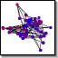

|  |
Student CliquesTutorial |
Experiments with intermittent between-group communication. Generalizes BaliPlus in the bali repo.
Within-group communication is common, between-group communication is uncommon. Success-bias where success depends on group state.